#5416 Der Herbie 3 - Tolle Käfer in der Rallye Monte Carlo
Alternativ: Herbie Goes to Monte Carlo
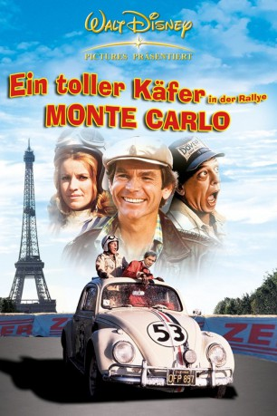 
 IMDB-Wertung: 5.5 / 10
IMDB-Wertung: 5.5 / 10  Metascore: 0
Metascore: 0 
Der Rennfahrer Jim Douglas will mit Herbie, dem beliebten VW-Käfer, an der jährlichen Straßenrallye von Paris nach Monte Carlo teilnehmen. Die Qualifikationsrennen verlaufen nach Plan, bis sich Herbie in Giselle, einen blauen Lancia, verliebt. Aber auch Jim ist der attraktiven Fahrerin des Sportwagens, Diane Darcy, nicht abgeneigt. Die Rallye erreicht jedoch ungeahnte Ausmaße, als plötzlich eine Gruppe von Dieben hinter Herbie her ist. In seinem Tank befindet sich nämlich wertvolles Diebesgut…
Jahr: 1977
Dauer: 100 Minuten
FSK: 6
Land: USA Studio: Buena Vista Distribution CompanyTonspuren: DD5.1 - ,
Untertitel:
Auflösung: SD (710x426) Größe: 1771 MB
Genre: Action, Komödie, Abenteuer, Familie, Liebe
Regisseur: Vincent McEveety
Drehbuch: Satoshi Kon
Soundtrack:
Darsteller:
- 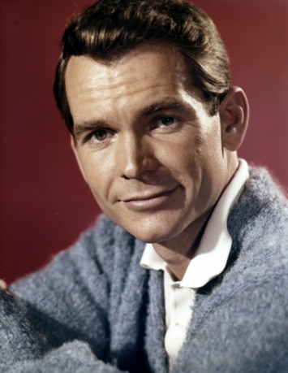 Dean Jones als Jim Douglas
- 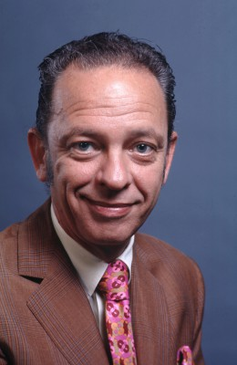 Don Knotts als Wheely Applegate
- Julie Sommars als Diane Darcy
- 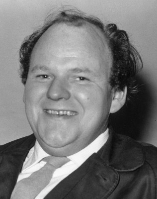 Roy Kinnear als Quincey
- 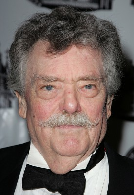 Bernard Fox als Max
- 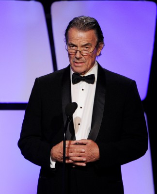 Eric Braeden als Bruno Von Stickle
- 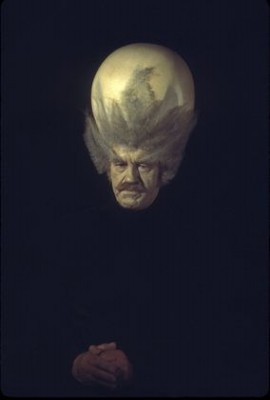 Alan Caillou als Emile
- 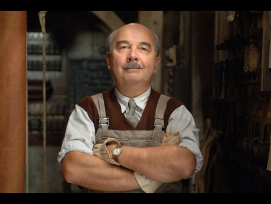 Gérard Jugnot als Waiter
- Dick Warlock als Driver
- Jerry Brutsche als Driver
- Jesse Wayne als Driver
 Regis Parton als Driver
Regis Parton als Driver- Josiane Balasko als (uncredited
- 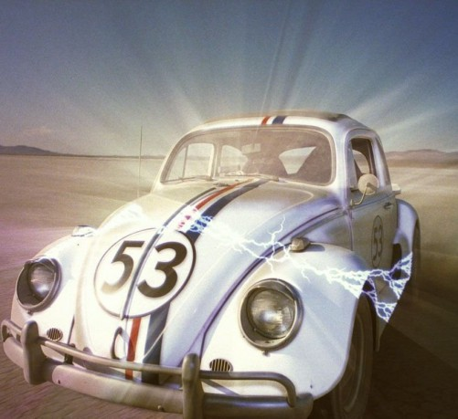 Herbie als Itself , uncredited
- 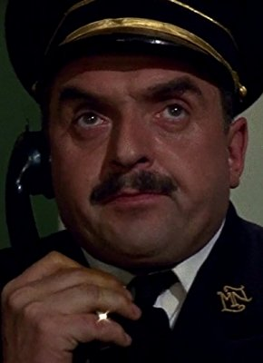 Jacques Marin als Inspector Bouchet
- Xavier Saint-Macary als Detective Fontenoy
- François Lalande als Monsieur Ribeaux
- Laurie Main als Duval
- Mike Kulcsar als Claude
- Johnny Haymer als Race Official
- 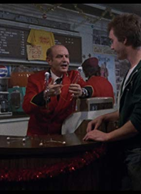 Stanley Brock als Taxi Driver
- Jean-Marie Proslier als Doorman
- Tom McCorrey als Showroom M.C.
- 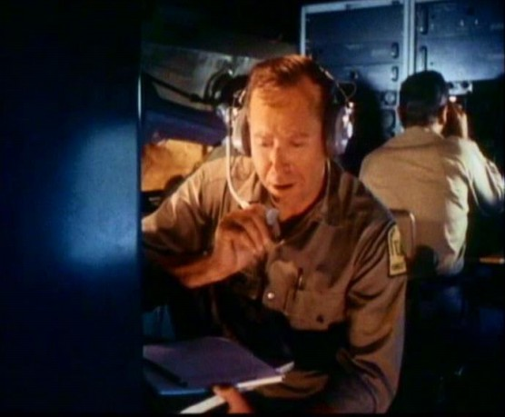 Lloyd Nelson als Mechanic
- Jean-Jacques Moreau als Truck Driver
- Yveline Brière als Girl Friend
- Sébastien Floche als French Tourist
- Madeleine Damien als Old Woman
- Alain Janey als Man at Cafe
- Raoul Delfosse als Police Captain
- Edward Marcus als Exhibit M.C.
- Kevin Johnston als Driver
- Bob Harris als Driver
- 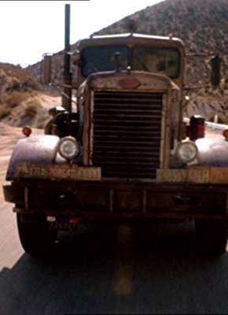 Carey Loftin als Driver
- Bill Erickson als Driver
Datei: X:\6-Hexalogie(A-Z)\Herbie\Herbie 3 - Tolle Käfer in der Rallye Monte Carlo, Der (1977, FSK6, 710x426).mkv seit 30.01.2017
Festplatte: HD Collection-3(N-Z)-6(A-Z)
 Es gibt insgesamt 9 Filme in der Gruppe '6-Hexalogie(A-Z)\Herbie'
Es gibt insgesamt 9 Filme in der Gruppe '6-Hexalogie(A-Z)\Herbie'